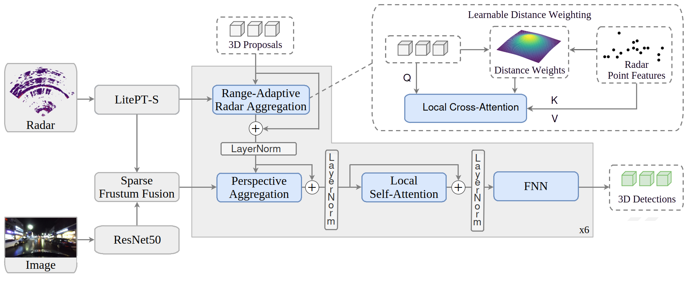

Autonomous driving relies heavily on perception quality. However, the most common sensor setup, Camera-LiDAR fusion, is costly, degrades under low light and adverse weather, and cannot directly measure the velocity of target objects. To this end, we propose a Camera-Radar fusion method with a radar-specific feature encoder that overcomes the limitations of LiDAR-based backbones for radar data. First, we extract image and radar features using backbones tailored to each sensor modality. We then aggregate radar features with predefined 3D proposals and combine the resulting queries with frustum-fused Camera-Radar features through perspective aggregation. This allows each modality to contribute its complementary strengths. We incorporate local attention to reduce computational cost while maintaining accuracy. Finally, a feed-forward network predicts the 3D detections. We demonstrate that our detector outperforms the baselines in both 3D and BEV detection accuracy, effectively unlocking radar as a first-class modality for 3D perception in autonomous driving.

We propose a three stage method that detects 3D objects from radar and camera input. First, we extract image and radar features using backbone networks trained on the respective modalities. We then aggregate the radar features with predefined 3D proposals and combine the resulting queries with frustum-fused Camera-Radar features through perspective aggregation. Finally, we leverage the feature maps to generate the 3D detections.
We compare our method against recent state-of-the-art 3D object detection methods on diverse scenarios of the K-Radar dataset. We provide the ground truth visuals for proper comparison.
sunny, day, university
rain, night, urban
fog, day, parking space
heavy snow, day, highway
@mastersthesis{banning_radar-specific_2026,
author = {Banning, Ole},
title = {Radar-Specific Features for Radar-Camera 3D Object Detection},
school = {Technical University of Munich},
year = {2026},
type = {Master's thesis},
note = {In preparation},
}